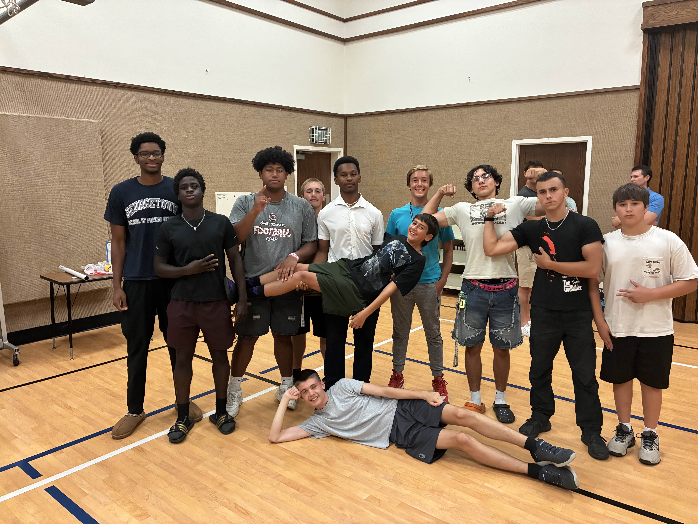
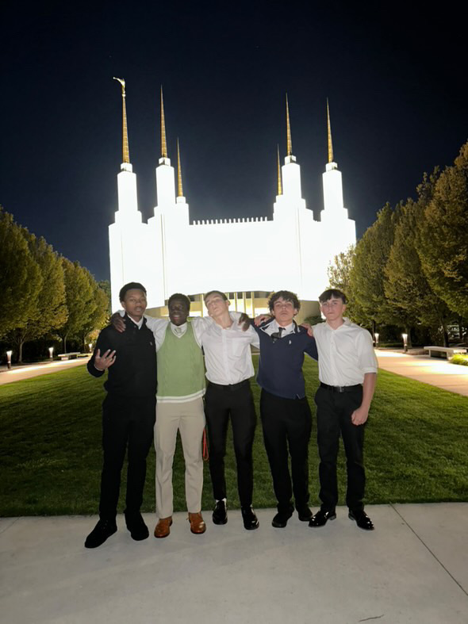

The young men, aka my bestfriends

Our temple trip to D.C. – unforgettable

Last day of seminary – this class changed me for the better.. I try to forget the mornings though

Late night mission prep — studying Preach My Gospel